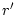

Local rotation matrices are used to rotate the global coordinate system (given by the definition of the Bravais matrix) to a local coordinate system for each atomic site. They are used in the program for two reasons:
It is of course possible to perform calculations without ``local rotation matrices``, but in such a case the LM combinations given in Table 7.39 (and by SYMMETRY) may not be correct. (A program SYM written by G. Vielsack determines the LM values for arbitrary orientations.)
Fortunately, the ``local rotation matrices`` are usually fairly simple and are now automatically inserted into your case.struct file. Nevertheless we recommend to check them in order to be sure.
The most common coordinate transformations are
Inspection of the output of SYMMETRY tells you if the local rotation matrix is the unit matrix or it gives you a clear indication how to find the proper matrix.
The local rotation matrix , which transforms the global coordinates to the rotated ones , is defined by .
There are two simple ways to check the local rotation matrixes together with the selected LM combinations:
A first example for ``local rotation matrices`` is given for the rutile TiO2, which has already been described as an example in section 10.3. Also two other examples will be given (see below).
Examine the output from symmetry. It should be obvious that you need local rotation matrices for both, Ti and O:
....
Titanium operation # 1 1
Titanium operation # 2 -1
Titanium operation # 5 2 || z
Titanium operation # 6 m n z
Titanium operation # 12 m n 110
Titanium operation # 13 m n -110
Titanium operation # 18 2 || 110
Titanium operation # 19 2 || -110
pointgroup is mmm (neg. iatnr!!)
axes should be: m n z, m n y, m n x
This output tells you, that for Ti a mirror plan normal to z is present, but the mirror planes normal to x and y are missing. Instead, they are normal to the (110) plane and thus you need to rotate x, y by around the z axis. (The required choice of the coordinate system for mmm symmetry is also given in Table 7.39)
....
Oxygen operation # 1 1
Oxygen operation # 6 m n z
Oxygen operation # 13 m n -110
Oxygen operation # 18 2 || 110
pointgroup is mm2 (neg. iatnr!!)
axes should be: 2 || z, m n y
For O the 2-fold symmetry axes points into the (110) direction instead of z. The appropriate rotation matrices for Ti and O are:
Si possesses a face-centered cubic structure with two equivalent atoms per unit cell, at (0.125, 0.125, 0.125). The site symmetry is -43m. For the -phnon the two atoms are displaced in opposite direction along the (111) direction and cubic symmetry is lost. The output of SYMMETRY gives the following information:
Si operation # 1 1
Si operation # 13 m n -110
Si operation # 16 m n -101
Si operation # 17 m n 0-11
Si operation # 24 3 || 111
Si operation # 38 3 || 111
pointgroup is 3m (neg. iatnr!!)
axis should be: 3 || z, m n y
lm: 0 0 1 0 2 0 3 0 3 3 4 0 4 3 5 0 5 3 6 0 6 3 6
Therefore the required local rotation matrix should rotate z into the (111) direction and thus the matrix in the ``struct`` file should be:
| 0.4082483 -.7071068 0.5773503 | |||
| 0.4082483 0.7071068 0.5773503 | |||
| -.8164966 0.0000000 0.5773503 |
Selenium possesses space group P3121 with the following struct file:
H LATTICE,NONEQUIV.ATOMS: 1
MODE OF CALC=RELA POINTGROUP:32
8.2500000 8.2500000 9.369000
ATOM= -1: X= .7746000 Y= .7746000 Z= 0.0000000
MULT= 3 ISPLIT= 8
ATOM= -1: X= .2254000 Y= .0000000 Z= 0.3333333
ATOM= -1: X= .0000000 Y= .2254000 Z= 0.6666667
Se NPT= 381 R0=.000100000 RMT=2.100000000 Z:34.0
LOCAL ROT.MATRIX: 0.0 0.5000000 0.8660254
0.0000000 -.8660254 0.5000000
1.0000000 0.0000000 0.0
6 IORD OF GROUP G0
......
The output of SYMMETRY reads:
Se operation # 1 1 Se operation # 9 2 $|$$|$ 110 pointgroup is 2 (neg. iatnr!!) axis should be: 2 || z lm: 0 0 1 0 2 0 2 2 -2 2 3 0 3 2 -3 2 4 0 4 2 -4 2 ......
Point group 2 should have its 2-fold rotation axis along z, so the
local rotation matrix can be constructed in two steps: firstly
interchange x and z (that leads to z  (011) ) and secondly
rotate from (011) into (001) (see the struct file given above). Since
this is a hexagonal lattice, SYMMETRY uses the hexagonal axes, but the
local rotation matrix must be given in cartesian coordinates.
(011) ) and secondly
rotate from (011) into (001) (see the struct file given above). Since
this is a hexagonal lattice, SYMMETRY uses the hexagonal axes, but the
local rotation matrix must be given in cartesian coordinates.